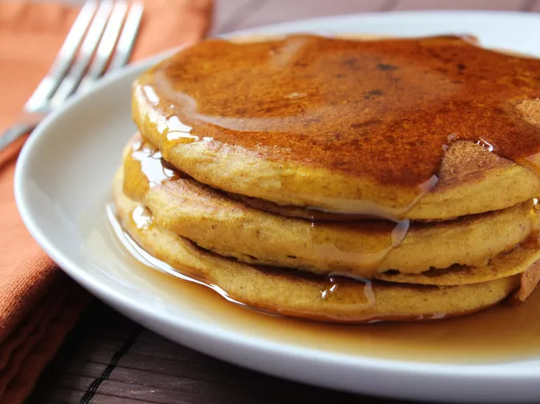

Home
Pumpkin Pancake

Description:
Pumpkin pancakes are good in any season but are perfect to warm you up on
cold winter mornings. You can use either canned or cooked fresh pumpkin.
What's the coziest way to start your day? With a stack of pumpkin
pancakes, of course! This recipe will quickly become a staple in your fall
breakfast rotation.
Ingredients:
- 1 1/2 cups of milk
- 1 cup pumpkin puree
- 1 large egg
- 2 tablespoon vegetable olives
- 2 tablespoons vinegar
- 2 cups of purpose flour
- 3 tablespoons of brown sugar
- 2 teaspoons of baking powder
- 1 teaspoon baking soda
- 1 teaspoon ground allspice
- 1 teaspoon ground cinnamon
- 1/2 teaspoon ground ginger
- 1/2 teaspoon salt/li>
- cooking spray
Steps:
- Gather all ingredients.
-
Stir milk, pumpkin, egg, oil, and vinegar together in a large bowl until
well combined.
-
Whisk flour, brown sugar, baking powder, baking soda, allspice,
cinnamon, ginger, and salt together in a separate bowl. Add to pumpkin
mixture; whisk just until combined.
-
Spray a griddle or frying pan with cooking spray; heat over medium-high
heat. Pour 3 to 4 tablespoons batter for each pancake onto the hot
griddle and flatten batter slightly with a spoon.
- Cook until small bubbles appear, about 2 minutes.
-
Flip and cook until golden brown, about 2 more minutes. Repeat with
remaining batter.
- Serve hot and enjoy!